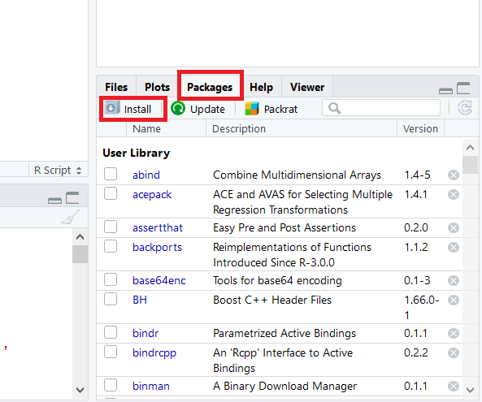

5 Pacotes ou bibliotecas no R
O R é uma linguagem inicialmente dedicada a métodos estatísticos. Como a Estatística é uma ciência extremamente ampla, são os pacotes que permitem o R ser um software tão completo!
Olha só:
O R é utilizado por pessoas da área de economia, previsões do tempo, área de saúde, demografia, machine learning, deep learning e várias outras…
Sendo que cada uma das áreas citadas ainda tem vários subnichos.
Então o que acontece é o seguinte:
existem milhares de pessoas ao redor do mundo que são muito boas em suas áreas e criam pacotes dentro do R para atender demandas específicas. Que, geralmente, ainda não tinham sido solucionadas de forma eficaz.
Isso só é possível porque o R é um software Open Source. Isso significa que as pessoas podem contribuir para melhorar as funcionalidades do programa! Com certeza, isso é determinante para o R ser tão completo.
O que estou falando é que se um especialista da sua área de uma universidade renomada publica um pacote no R, ele estará disponível para você usar no seu computador! Gratuitamente.
Agora que você já entendeu o contexto, vamos definir o que é um pacote do R:
Um Pacote é um conjunto de funções dentro do R, geralmente relacionados a um tema específico.
Além disso, os pacotes também têm uma documentação. Essa documentação explica para o que serve cada função do pacote. Te explica como usar cada função e ainda fornece exemplos práticos de uso.
5.1 Como instalar um pacote no R ou RStudio
Quando fazemos o download do R, também já estamos baixando os pacotes considerados básicos.
Mas muitas vezes você vai precisar de um pacote específico, pode ser para fazer um gráfico mais bonito, para trabalhar com datas de uma forma mais eficiente ou para trabalhar com mais qualidade com o próprio tema do seu projeto.
E para isso vamos fazer o download desse pacote, é muito simples!
O ggplot2 é um pacote muito usado para fazer gráficos mais elaborados, com grande capacidade de personalização.
Vamos usá-lo aqui como exemplo.
Existem três maneiras comuns para se instalar um pacote.
5.1.1 Usando o botão de instalação
Essa forma é muito intuitiva, clique na aba “Packages” (veja na imagem) e depois em “Install”. Irá abrir uma tela para você escolher o pacote que deseja instalar.
4_pacotes_botao_instalacao.png 